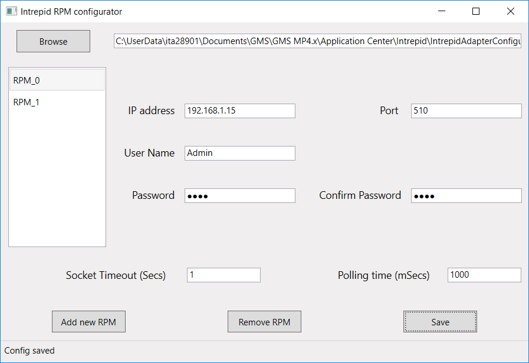

Configure the Communication Parameters
You configure the adapter communication parameters using the Intrepid_AdapterConfigurator tool.
- Copy the tool files from AdditionalSW\Intrepid_AdapterConfigurator folder on the installation disk to the local disk.
- From the local folder, run IntrepidRPMAdapterConfigTool.exe.
NOTE: If Windows UAC (User Account Control) is enabled to protect the target folder, then the tool will not be able to save the output file. In such a case, right-click the EXE file and select Run As Administrator. - The configuration tool window displays.
- At the top, the default working path is set to C:\Program Files (x86)\Siemens\Intrepid RPM Adapter\Config.json. If the Intrepid Adapter is installed in another location, click Browse to select the path where to save the Config.json file.
- If a Config.json file exists already in the selected folder, the configured parameters appear in the fields.
- On the bottom left of the window, select Add new RMP to add a new unit.
- A new line displays in the list field on the left-hand side, for example RPM_0.
- Enter the following RPM communication and authentication parameters:
- IP address and Port: these parameters must match the corresponding settings on the RMP unit)
- (Optional) User Name, Password and Confirm Password: required depending on the access security of the RMP unit. - Select Add new RMP again and repeat the previous step to add and configure more RMP units as necessary.
Select a unit in the list and click Remove RMP to delete an RMP unit. - Enter the following adapter communication parameters (valid for all RPM units):
- Socket Timeout (sec): Maximum delay allowed for a valid response from the RMP unit. You may need to set a higher value than the default 1 second in case of a slow network connection.
- Polling time (msec): Interval between 2 status polls of the RMP units. If necessary, you can set a higher value than the default 1000 milliseconds to reduce data traffic and thus save network bandwidth. - Click Save to save the parameter into the output file (Config.json).
- Check the status bar on the bottom left. A Config saved message indicates success. Errors may be caused by invalid parameter settings or by write-access problems (see note about UAC in step 2 above).
- Click X on the top right to exit and close the tool window.
- When you reopen the tool and select the same path again, the configuration data is loaded from the existing Config.json file for you to modify it.
